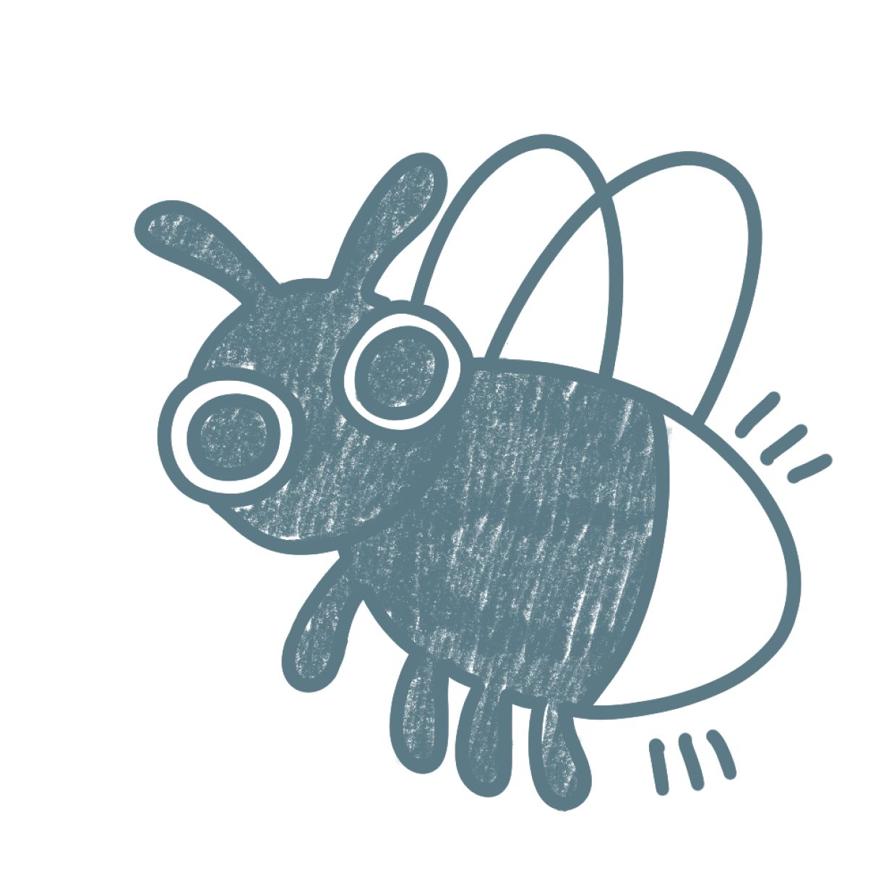

warm &
A question for the room
When was the last time you showed someone appreciation or gratitude?
We appreciate our friends and family. We just do not always show it.
Working social script
Care this explicit can feel like it needs a reason.
Related evidence: Kumar & Epley, 2018 · Givi & Galak, 2022. Occasion framing remains a working hypothesis.
04 / 10Where does each form of appreciation fall?
psychology-informedCircle size = how frequently it is received
Tone can be misread.
Kruger et al., 2005Voice can feel closer.
Kumar & Epley, 2021Thoughtfulness matters more than price.
Algoe et al., 2008 · Flynn & Adams, 2009quick text
voice note / video call
handwritten letter / physical gift
goldilocks zonehigh impact · low friction · repeatable
recipient impact →
friction: mental + physical →
Published studies support the mechanism labels. Map positions, circle sizes and Goldilocks zone are working hypotheses.
05 / 10feel they do not fully show the appreciation they feel.
say ordinary-day appreciation can feel awkward or out of place.
each form gets
one thing right
quick text
impact2.2
friction1.0
frequency4.7
voice note /
video call
video call
impact3.5
friction2.1
frequency3.6
handwritten letter /
physical gift
physical gift
impact4.7
friction4.3
frequency1.2
Temporary grouped rehearsal figures—not participant findings. Paired forms are not equivalent results.
06 / 10or too casual
They care.
But appreciation
stays unspoken.
uni students · long-distance connections
close friends · close family
Working need-state hypothesis—not validated market segmentation.
07 / 10When the results connect
if82%
feel they do not fully show the appreciation they feel
and71%
say the barrier is that it feels awkward or out of place
thenMake showing appreciation feel normal on an ordinary day.
thereforeCreate the impact of gift-giving, with the low friction and repeatability of everyday digital contact.
Temporary rehearsal figures—not participant findings. Replace before the judged pitch.
08 / 10Warm & Fuzzies is a private digital keepsake that brings the thoughtfulness of a letter to the ease of a text.
Follow along.
Scan to open Warm & Fuzzies on your phone while we demo it live.
warm-and-fuzzies.vercel.app/demo
No phone? Follow the same experience on our screen.
01 · Warm & Fuzzies